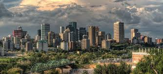

Economically, Pakistan is a developing country with a mixed economy that includes agriculture, industry, and services sectors. Agriculture remains a significant contributor to the economy, employing a large portion of the population. Industries such as textiles, manufacturing, and pharmaceuticals also play crucial roles. Challenges such as poverty, infrastructure development, and economic reforms are ongoing concerns, yet Pakistan continues to pursue growth through various developmental initiatives and partnerships.
